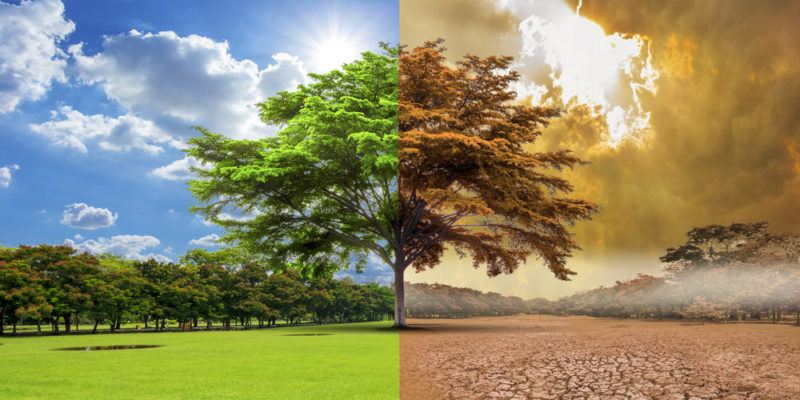
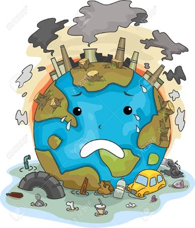

Explora las causas, efectos y soluciones a la sequía en Cuenca
Causas de la Falta de Lluvias en Cuenca
La falta de lluvias en Cuenca puede estar vinculada a varios factores, como el cambio climático global, la deforestación, y los patrones climáticos cambiantes. Estos factores han alterado el ciclo de lluvias, reduciendo significativamente la precipitación en la región.
Otro factor que afecta Cuenca son las temperaturas extremas. Pese a que se han registrado lluvias en las últimas semanas de noviembre, no son suficientes por el factor climático.
Cristina Argoti, analista de pronóstico meteorológico del Inamhi, señaló que todo el callejón interandino presenta esta particularidad de altas temperaturas. En el caso de Cuenca, apuntó que las mayores temperaturas registradas entre octubre, noviembre y diciembre fueron: el 7 de octubre con 28 grados centígrados, el 3 de noviembre con 27 y el 4 de diciembre con 24.
El promedio de la temperatura en la urbe morlaca se ha mantenido, en los primeros días de diciembre, en un promedio de entre 24 y 24,8 grados centígrados. Las temperaturas elevadas son desde las primeras horas de la mañana y alcanzan su pico más alto entre las 13:00 y 16:00.

Impactos Ambientales
La falta de lluvias afecta gravemente los ecosistemas locales. La disminución de agua en los ríos y lagos ha puesto en peligro la flora y fauna. Además, los incendios forestales se han vuelto más comunes debido a la sequedad de los suelos.
La falta de lluvias contribuye a la erosión del suelo, ya que la ausencia de cobertura vegetal adecuada provoca que el suelo se lave más fácilmente durante eventos de lluvia esporádicos, lo cual degrada aún más el ecosistema.
La reducción de agua en los ríos y lagos afecta los hábitats de muchas especies acuáticas y terrestres, forzando a las especies a desplazarse a nuevas áreas o enfrentar la extinción.
La sequía prolongada puede llevar a la pérdida de biodiversidad, con la muerte de especies vegetales y animales que no pueden adaptarse a las condiciones cambiantes.

Consecuencias Económicas y Sociales
La agricultura ha sido uno de los sectores más afectados. Los agricultores enfrentan pérdidas de cultivos, lo que impacta la economía local. Además, el racionamiento de agua ha afectado a la población, limitando el acceso a este recurso vital. Los ríos de Cuenca registraron una disminución súbita de caudales. Ecuador se enfrentará a un apagón nocturno en medio a una crisis eléctrica que se agudiza por la falta de lluvias.
Los ríos de Cuenca están en estado crítico, a 67 días de sequía hidrológica que se cumplen este 17 de septiembre de 2024, y en medio de una crisis eléctrica que obligará cortes de luz en todo el Ecuador. Los ríos Tomebamba, Yanuncay y Tarqui llegaron a niveles de estiaje.
Por la sequía, a los ríos se los puede atravesar de lado a lado caminando. Se han vuelto escenarios para jugar, recorrer o buscar uno que otro pez en los estrechos y escasos flujos de agua, esto debido a la sequía hidrológica que ya suma.
El panorama está lejos de ser el habitual. Las piedras están expuestas, se ven unos que otros palos, troncos y alguna basura acumulada que dejó la corriente cuando las lluvias alimentaban los afluentes. El río Tomebamba, por ejemplo, -que es el atractivo para los turistas porque atraviesa la ciudad y divide a la Cuenca histórica con la moderna-, registró en la tarde un caudal mínimo de 0.79 milímetros cúbicos por segundos, cuando los niveles normales son entre cinco y seis metros cúbicos por segundo.
Soluciones y Medidas de Mitigación
Entre las medidas para enfrentar la sequía, se incluyen la reforestación, la construcción de sistemas de almacenamiento de agua, y el uso eficiente del recurso hídrico tanto en la agricultura como en la vida diaria. Es esencial que tanto el gobierno como la ciudadanía trabajen juntos para enfrentar este desafío.
Contacto
Si deseas más información sobre los cambios climáticos de la ciudad de Cuenca, llámanos o contáctanos al: +593979344705 o +593983735158